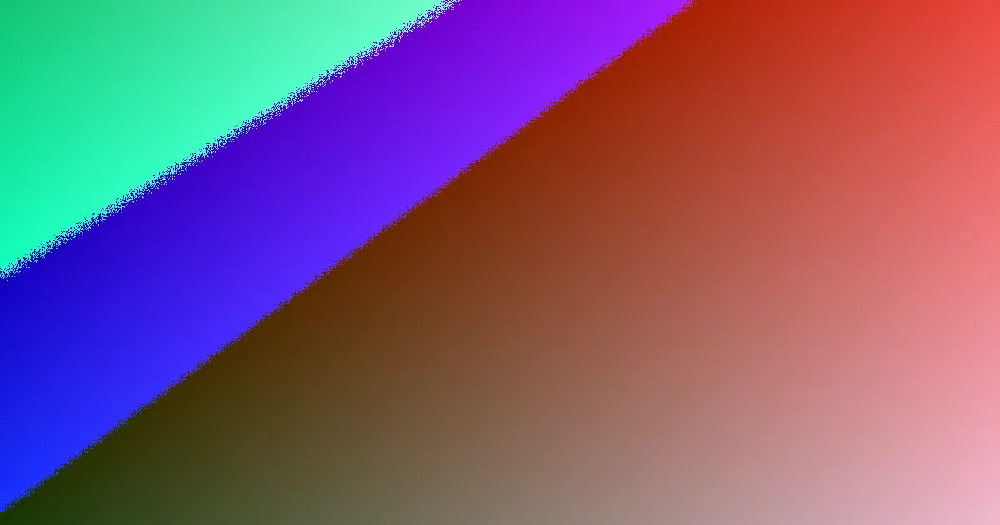

Most web design decisions in Brisbane hinge on scope, editing needs, and launch timelines. A basic brochure site typically costs $2,500-$7,500 and takes 4-10 weeks. More complex, lead-focused sites range from $7,500-$15,000, with custom or e-commerce builds starting around 12 weeks. Factors like content and feedback speed significantly impact delivery times.
For local buyers, web design brisbane before you start Matching budget, platform, and launch timing to your website's goals is key.
Web Design Brisbane Before You Start Explained
When considering web design in Brisbane, a broad range of services exists, including custom builds, small business sites, WordPress projects, e-commerce stores, redesigns, landing pages, SEO-focused builds, and ongoing care plans. The most effective way to filter these options is by first determining the primary goal of your website: whether it needs to generate phone calls, capture enquiry forms, support sales conversations, or process online orders. This fundamental decision influences nearly every other aspect of the project. For instance, a service-based business might only require a compact brochure site with clear contact pathways, while a campaign page could be even more streamlined if focused on a single offer or launch. Without this initial clarity, project discussions can easily drift towards aesthetic preferences before the core business case is established.
For a different perspective on project briefing, this Brisbane website planning guide offers valuable cross-referencing.
Choosing the Right Platform
The choice of platform should align with your handover expectations and daily usage needs. WordPress is often recommended for its flexibility and ease of use, making it suitable for teams that anticipate making regular text, image, or page updates without needing constant developer assistance. For e-commerce ventures, platforms like Shopify and WooCommerce are highlighted, directing the conversation towards catalogue structure, checkout processes, and ongoing administration rather than solely design elements. Redesign projects require a distinct approach. The focus should be on modernising an existing or underperforming site while preserving valuable search rankings. This necessitates identifying crucial pages, existing URLs, and content that currently drives enquiries. Failing to map these elements early can lead to avoidable launch complications, even if the visual outcome is superior.
Select WordPress when frequent content edits are a standard operational requirement. Opt for an e-commerce scope when managing products, checkout functionality, and catalogue maintenance are central to your business. Approach redesign work as both a design challenge and a migration task.
Using Price Ranges to Define Scope
The provided price ranges serve as a useful benchmark for distinguishing between simpler and more demanding projects. A typical small business brochure website in Brisbane might cost between $2,500 and $7,500. A more sophisticated, lead-generation-focused build generally falls within the $7,500 to $15,000 bracket. E-commerce and highly customised projects typically start at higher price points. While these figures are not a substitute for a formal quote, they help businesses assess whether their project requirements and budget are reasonably aligned. When seeking quotes, ask specific questions about who will be responsible for copywriting, image sourcing, the number of review rounds included, and whether training is part of the handover process. Inquire about the specific launch tasks covered and whether post-launch support is included in a care plan or billed separately. These details often provide a clearer explanation for price variations than a visual mock-up alone.
Timing: Content and Feedback are Crucial
The timing guidance provided is also quite specific. A simple brochure website typically takes around 4 to 10 weeks to complete. A WordPress or small business site usually requires 6 to 10 weeks. E-commerce or custom builds generally start at approximately 12 weeks and can extend over several months. This highlights that timing is as much a planning consideration as it is a production commitment. In practice, the speed at which content is supplied and feedback is provided significantly affects the delivery schedule. It is advisable for businesses to establish internal responsibilities before work commences, designating individuals for approvals, content gathering, and resolving any late-stage changes. Without this structured approach, even modest Brisbane projects can experience delays, regardless of the technical simplicity. With proper organisation, adhering to the schedule becomes more manageable as decisions are not left pending for extended periods.
Local Relevance in Your Brief
The value of local knowledge should be evident in both your project brief and the calls to action on your website, rather than relying on generic slogans. A Brisbane-based web design team often possesses a deeper understanding of the local market and offers greater accessibility for necessary updates. Their familiarity with distinct selling contexts, such as those in Fortitude Valley versus Sunnybank, provides a practical advantage. This local relevance should be reflected in the prioritisation of pages, the language used in offers, and the design of the enquiry pathways. The source material also notes that websites are built mobile-first, with fast load times and solid SEO foundations to ensure they are ready to rank. However, ongoing search performance is influenced by market competition and content quality, and no reputable provider can honestly guarantee a specific search engine position. Therefore, website structure, speed, and effective page planning are more critical decision criteria than ranking guarantees. This guide is particularly beneficial for individuals building their first website, businesses planning a redesign, teams seeking editable handover options, and operators venturing into online sales. Each group should carefully consider questions about ownership, training, and support before approving a web design project.
- Define Your Website's Outcome. Determine if your website needs to generate enquiries, facilitate sales conversations, or directly sell products before comparing build options.
- Match Platform to Needs. Choose between brochure, WordPress, landing page, redesign, or e-commerce scope based on your editing requirements and sales process.
- Test Scope with Price Ranges. Use indicative price ranges to gauge if your project scope aligns with your budget, distinguishing between simple and complex builds.
- Prioritise Content and Feedback. Understand that content readiness and timely feedback significantly impact project timelines. Assign internal owners for these tasks.
- Incorporate Local Context. Ensure your brief and website reflect an understanding of the local Brisbane market and target audience for effective communication.
Common questions
How much does web design cost in Brisbane? The cost varies by scope. A small business brochure site typically ranges from $2,500 to $7,500. A more polished, lead-focused site is usually between $7,500 and $15,000. E-commerce and heavily custom work start higher.
How long does it take to build a website in Brisbane? A simple brochure site commonly takes 4 to 10 weeks. WordPress or small business sites usually take 6 to 10 weeks. E-commerce or custom builds can start at 12 weeks and extend over several months, depending heavily on content and feedback speed.
Can a Brisbane web designer help with SEO and Google rankings? A well-built website with clean markup, fast load times, and sensible on-page SEO is ready to rank. However, ongoing ranking results depend on competition and content. No provider can guarantee specific positions under Australian Consumer Law.
This guide is most useful for first-site owners, businesses planning a redesign, teams wanting editable handover, and operators moving into online sales.